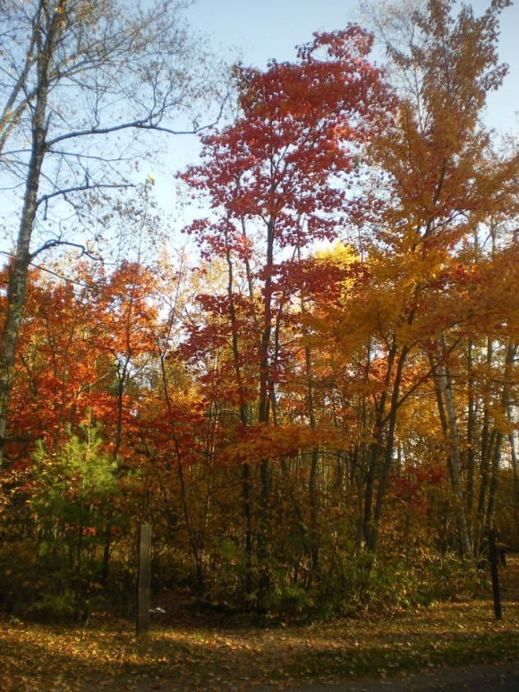

Biljke u Jesen
Priroda i društvo
Autori prezentacije:
-
Lucija Kapetanović
-
Dora Knezović
-
Marta Ključanin
-
Christian Mihalić
-
Dominik Belina
-
Jana Cvjetko
Jesen
Definicija 1
definicija: jesen je jedno od 4 godisnja doba
-
trajanje:
-
kalendarski:
-
23.rujna (ekvinocij) do 21. prosinca (solsticij)
Jesen
Definicija 3
osobine:
-
kraci dani, dulje noci =
- manje svjetla (sunca)
- nize temperature
posljedice:
-
flora (biljke) i fauna (zivotinje)
-
spremaju se za zimu
-
hibernaciju
Biljke
Vedute - jesenski krajolici

Biljke
Imena mjeseci
U slavenskim jezicima imena mjeseci opisuju godisnja doba
-
rujan - 9. mjesec
slovenski (Kimavec, Poberuh), slovački - Jaseň
rujanje - rika jelena, rujne boje žarke boje
-
listopad - 10. mjesec
slovenski - Vinotok, Listognoj, slovački - Rujeň,, češli - Říjen
-
studeni - 11. mjesec
slovenski (Listopad, Kozovperstk)
češki, ukrajinski, poljski, bjeloruski + listopad, slovački - Studeň
-
prosinac - 12. mjesec
slovenski + Gruden, poljski - Grudzień, slovački - Mrazeň, češki + Prosinac
Biljke
Listopadne biljke
-
cijele godine biljke stvaraju energiju od
-
sunčevog svjetla
-
vode
-
ugljičnog dioksida CO2 i
-
hranjivih tvari (minerala) iz zemlje
biljke su motori
-
spremaju energiju u korijenu i pripremaju se za hibernaciju
-
fotosinteza (photosynthesis)
-
pigmenti + sunčeva svjetlost
-
posebnu ulogu ima klorofil
poseban pigment koji liscu daje zelenu boju
(apsorbira ostale boje, a reflektira zelenu)
-
biljke trajnice (jabuke, kruske, vinova loza)
Biljke
Listopadne biljke
mijenjaju boju lišća koje odumire
-
Američki indijanci vjerovali su da je čovjek ubio Velikog Medvjeda na nebu
čija se je krv prolila po lišću
-
znanstveno objašnjenje
-
osim klorofila ima i drugih pigmenata
- karoten (narandžast - mrkva)
- xantofil (xantho - grčki žut)
-
anthocyanin (crvena boja)
-
neke biljke + ne sve
-
hladno, suho vrijeme kao stres na biljku povećavaju lučenje anthocyanin-a
-
biljka pokušava skupiti još energije u korijenu prije zime
Biljke
Vazdazelene biljke
Borovke (Pinaceae) - 4 roda četinjača
-
Smreka
-
Jela
-
Bor
-
Ariš - jedini kojemu otpada lisce
Biljke
Vazdazelene biljke
Bor
-
nepravilna krošnja
-
hrapava kora, crvenkasta - naročito kod starijih stabala
-
Alepski bor (Pinus halepensis) je sredozemno drvo
obala i na otocima
bor koji se razmnožava požarom.
Biljke
Vazdazelene biljke
Bor
Biljke
Vazdazelene biljke
Smreka (Picea abies)
-
šiljast vrh
grane su joj obješene, često kao sablje
-
češeri vise
-
iglice - četverouglaste koje lako možete okretati među prstima
Biljke
Vazdazelene biljke
Smreka
Biljke
Vazdazelene biljke
Jela (Abies alba)
-
tanjurast vrh
-
uspravne grane
-
uspravne češere
-
iglice pljosnate i imaju dvije pruge s donje strane
Biljke
Vazdazelene biljke
Jela
Hvala na paznji
???? Pitanja ????